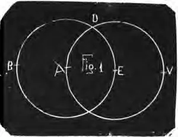
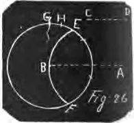
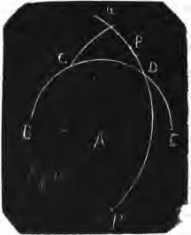
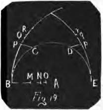
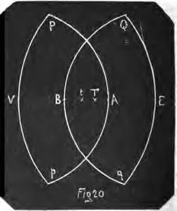

Content of type 'problem'

Book I: Definitions and Principles (§§ 1–10)
I call Geometry of the Compass that which, by means of the compass alone without the straightedge, determines the position of points.

Book III § 64: Linear Distance Doubling
§ 64. Problem. To double the distance \(AB\) in a straight line.

Book IV §§ 76–77: Perpendicular Lines with Compass Alone
Problem. Two points \(A\) and \(B\) being given (fig. 26); to find a point \(H\) such that the straight line \(BH\) is perpendicular to \(AB\) at \(B\) and equal to a given distance \(CD\).
Libro I: Definizioni e Principi (§§ 1–10)
Chiamo Geometria del Compasso quella, che per via del solo compasso senza la riga determina la posizione dei punti.
Libro III § 64: Raddoppiamento della Distanza
§ 64. Problema. Raddoppiare la distanza \(AB\) in linea retta.
Libro IV §§ 76–77: Perpendicolari al Solo Compasso
Problema. Dati i due punti \(A\) e \(B\) (fig. 26); trovare un punto \(H\) tale, che la retta \(BH\) sia perpendicolare alla \(AB\) in \(B\) ed eguale ad una data \(CD\).
Notes: Definitions & Fundamental Principles
Mascheroni establishes the ontological status of the line in compass geometry: A line is defined and given by an ordered pair of distinct points \((A, B)\). Tracing a continuous graphite or ink stroke is discarded as an unnecessary physical artifact. The intersection of two lines \((A, B)\) and \((C, D)\) is defined strictly as locating the unique point \(S\) that would lie on both lines if drawn.
Notes: Linear Distance Doubling
In Cartesian coordinates, let \(A = (0, 0)\) and \(B = (1, 0)\). Then:
Summary: Definitions & Fundamental Principles
Two distinct points \(A, E\) defining base segment \(AE\).
Summary: Linear Distance Doubling
Two distinct points \(A, B\) defining distance \(AB\).
Summary: Perpendicular Lines with Compass Alone
Two points \(A, B\) defining baseline segment \(AB\).
Book I: Notation and Fundamental Lemma (§§ 11–14)
In like manner, three intervals \(AB, CD, EF\) being given, if I say: make :math:`EG = CD` and :math:`FG = AB`, it must be understood to mean: with radius \(CD\) and center \(E\), describe a circle on whose circumference lies point \(G\). Then with interval \(AB\) and center \(F\), describe another circle cutting the first in point \(G\).

Book III § 66: Distance Bisection Without Straightedge (Solution V)
§ 66. Problem. To bisect a given distance \(AB\).
Libro I: Notazione e Lemma Fondamentale (§§ 11–14)
Istessamente dati per esempio tre intervalli \(AB, CD, EF\); se dirò: si faccia a :math:`CD = EG`; ad :math:`AB = FG`; si dovrà intendere che dica: col raggio \(CD\), e col centro \(E\) si descriva un cerchio, nella cui circonferenza sia il punto \(G\). Quindi coll’intervallo \(AB\), e col centro \(F\) si descriva un altro cerchio, che tagli il primo nel punto \(G\).
Libro III § 66: Bisezione della Distanza (Soluzione V)
§ 66. Problema. Dividere per metà una distanza data \(AB\).
Notes: Notation & Fundamental Collinearity Lemma
Mascheroni’s Lemma (§ 13) provides the foundational engine for all subsequent constructions in La Geometria del Compasso: * Given two points \(A, B\) defining a virtual axis \(L\), and an external point \(P\), the point \(p = A(AP) \cap B(BP)\) is the orthogonal reflection of \(P\) across \(L\):
Notes: Segment Bisection (Solution V)
In Cartesian coordinates, let \(A = (0, 0)\) and \(B = (1, 0)\). 1. Collinear doubling gives \(E = (-1, 0)\). 2. Arc \(\Gamma = E(2)\) has equation \((x + 1)^2 + y^2 = 4\). 3. Circle \(B(1)\) has equation \((x - 1)^2 + y^2 = 1\). 4. Subtracting equations: \(4x = 3 \implies x = \frac{3}{4}, y = \pm \frac{\sqrt{7}}{4}\). Thus \(P = \left(\frac{3}{4}, \frac{\sqrt{7}}{4}\right)\) and \(p = \left(\frac{3}{4}, -\frac{\sqrt{7}}{4}\right)\). 5. Arcs from \(P, p\) of radius \(1\) meet on the \(x\)-axis:
Summary: Notation & Fundamental Collinearity Lemma
Two fixed points \(A, B\) defining baseline \(AB\). Two radii \(r_1 = AP\) and \(r_2 = AQ\).
Summary: Segment Bisection (Solution V)
Two distinct points \(A, B\) defining baseline segment \(AB\).

Book III § 67: Repeated Binary Distance Subdivision
Problem. To continue to subdivide into two equal parts with the simplest construction (fig. 18 and 19), \(AM\) into \(N\), \(AN\) into \(O\), and so on to infinity.
Libro III § 67: Suddivisione Continua d’una Distanza
Problema. Proseguire a suddividere in due parti eguali colla più semplice costruzione (fig. 18 e 19), la \(AM\) in \(N\); la \(AN\) in \(O\); ecc. all’infinito.
Notes: Repeated Binary Distance Subdivision
Mascheroni’s § 67 establishes the constructibility with compass alone of the complete ring of dyadic rationals:
Summary: Repeated Binary Distance Subdivision
Segment \(AB\) with midpoint \(M\) already located (\(AM = \frac{1}{2} AB\)).

Book III § 68: Distance Trisection in a Straight Line
Problem. To divide the distance \(AB\) into three equal parts.
Libro III § 68: Trisezione d’una Distanza
Problema. Dividere in tre parti eguali la distanza \(AB\).
Notes: Distance Trisection in a Straight Line
Mascheroni’s trisection solution illustrates the underlying principle of circular inversion that unifies La Geometria del Compasso: * The point \(M\) is the inverse of \(E\) with respect to the circle centered at \(B\) with radius \(R = AB\):
Summary: Distance Trisection in a Straight Line
Segment \(AB\).